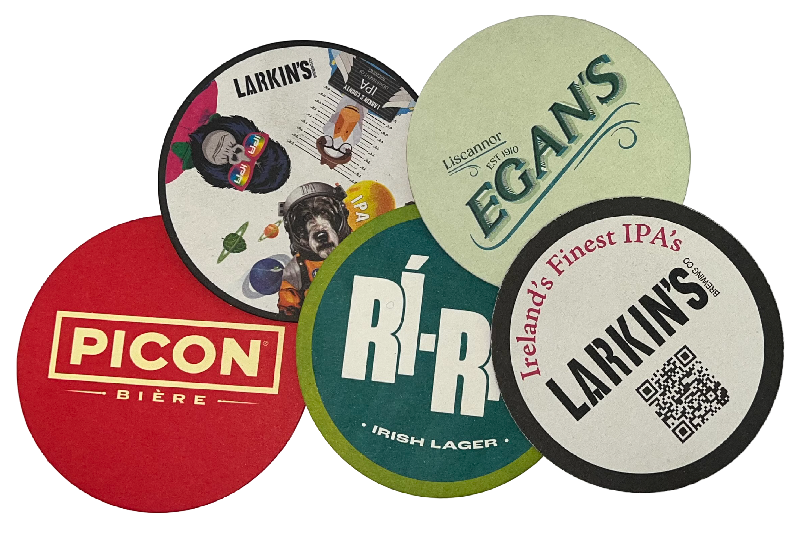
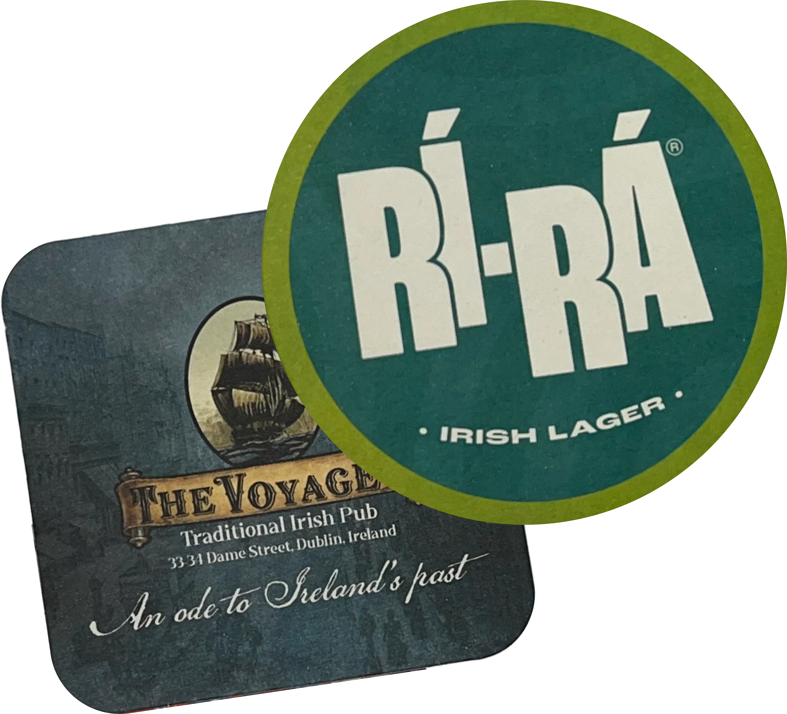
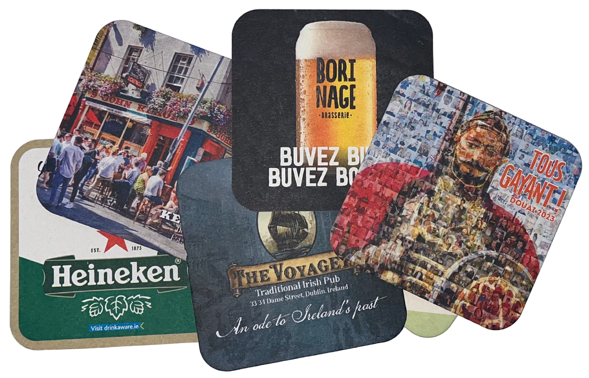
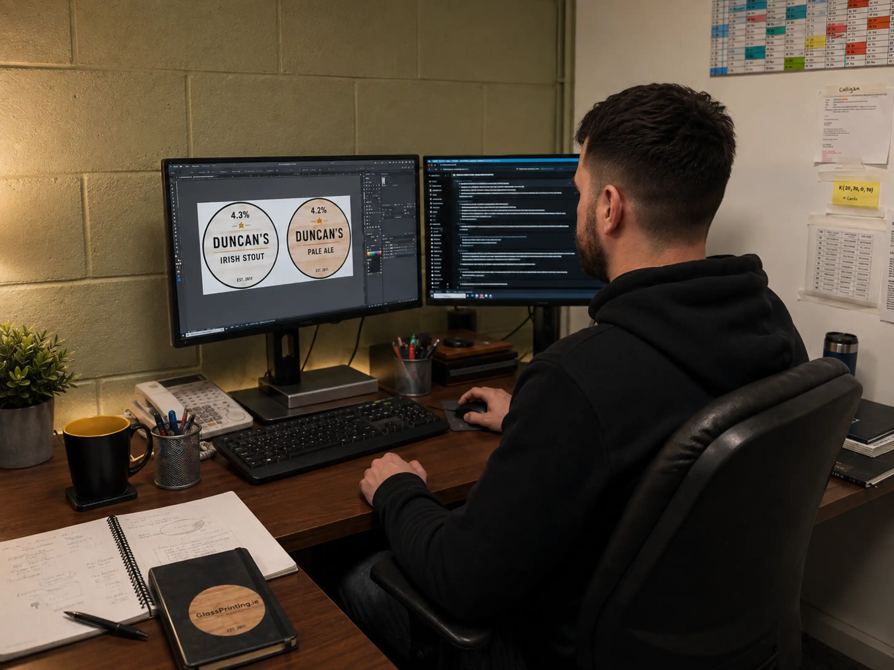

Round Beer Mats
A traditional hospitality format suitable for pubs, breweries, drinks brands, restaurants and events.
1.4 mm Full Colour Double-Sided
Dublin-based Beer Mat & Coaster Suppliers
Based in Dublin, we supply custom printed beer mats and premium branded coasters to pubs, bars, breweries, restaurants, hotels, events and businesses throughout Ireland.
Our custom beer mats are printed in full colour on genuine 1.4 mm thick absorbent beer mat board, the standard hospitality-grade material used in pubs, bars and restaurants.
Available in round or square formats, with full-colour printing included on both sides. Artwork templates and a professional design service are also available.
Our in-house design studio can prepare print-ready artwork for customers who do not already have a finished design.

Traditional range
Traditional hospitality-grade absorbent beer mats manufactured from genuine 1.4 mm beer mat board and printed in full colour on both sides.

A traditional hospitality format suitable for pubs, breweries, drinks brands, restaurants and events.
1.4 mm Full Colour Double-Sided

A clean, modern format that provides plenty of space for logos, promotional messages, QR codes and campaign artwork.
1.4 mm Full Colour Double-Sided
We exclusively use 1.4 mm thick beer mat material, manufactured specifically for hospitality use to absorb condensation and protect tables and bar surfaces.
Standard production: approximately 2–3 weeks from artwork approval.
Lead time begins once:
Delivery times may vary slightly depending on quantity and delivery location.
Orders can also be collected from Hall Print Solutions by arrangement.
Download the correct template for your beer mat shape and prepare your artwork using the requirements below.
We will check supplied artwork before production and contact you if there are any obvious issues.
In-house Design Studio
Do not have finished artwork?
We also offer a professional beer mat design service.
Our design team can prepare suitable print-ready artwork for your beer mats.
Design charges depend on the amount of work required and will be confirmed before the design begins.
You can send us your:

Long-lasting brand presentation
For a more refined and long-lasting branding option, we also offer a range of premium reusable coasters manufactured from:
These coasters are ideal for hotels, restaurants, premium bars, distilleries, corporate gifting, boardrooms, events and premium promotional campaigns.
Unlike traditional disposable beer mats, these options are designed to be reused, creating a more elegant and lasting brand experience.
Made from recycled PET felt and available in a selection of neutral and contemporary colours.
The soft felt material provides a modern appearance while helping to protect tables and other surfaces.
Natural cork coasters provide a warm, understated appearance and work particularly well for hospitality venues, food brands, breweries and environmentally conscious campaigns.
As cork is a natural material, slight variations in colour and texture should be expected.
Bamboo coasters provide a clean, high-quality finish suited to premium venues, corporate gifting and drinks brands.
They can be screen printed or, where lead time allows, laser engraved for a more permanent and subtle result.
As bamboo is a natural material, the grain and engraved finish may vary slightly between individual pieces.
PU leather coasters offer a sophisticated finish suitable for hotels, restaurants, cocktail bars, boardrooms and premium corporate promotions.
They are available in a range of colours and can be screen printed or debossed.
Debossing presses the logo into the surface of the coaster, creating a subtle and elegant finish.
All four materials can be branded with a one-colour screen print, with a minimum order quantity of 100 coasters.
Depending on the required lead time, we can also offer:
Engraving and debossing create a subtle, premium finish without adding a printed colour.
Request a Premium Coaster QuotePlan your premium project
To receive a quotation, please provide: